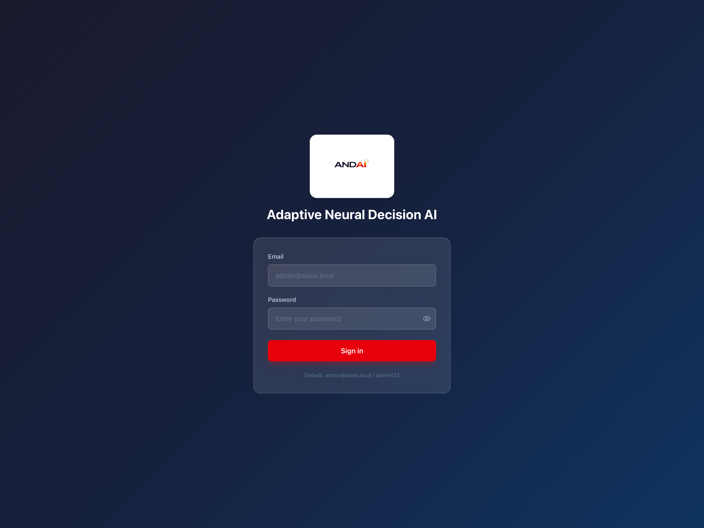
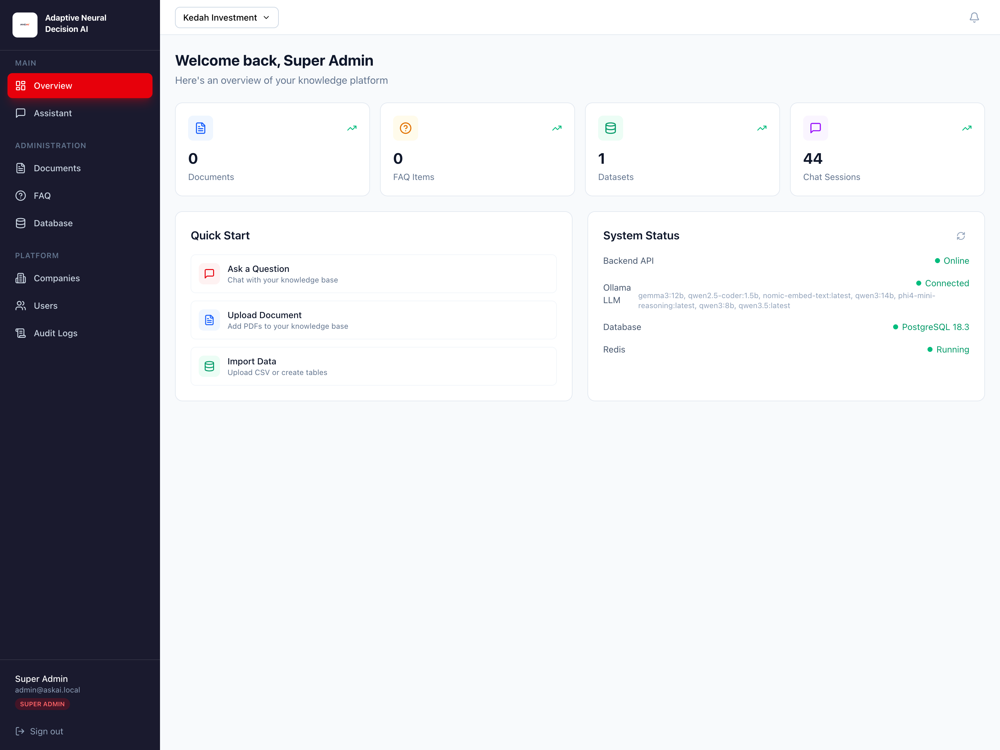
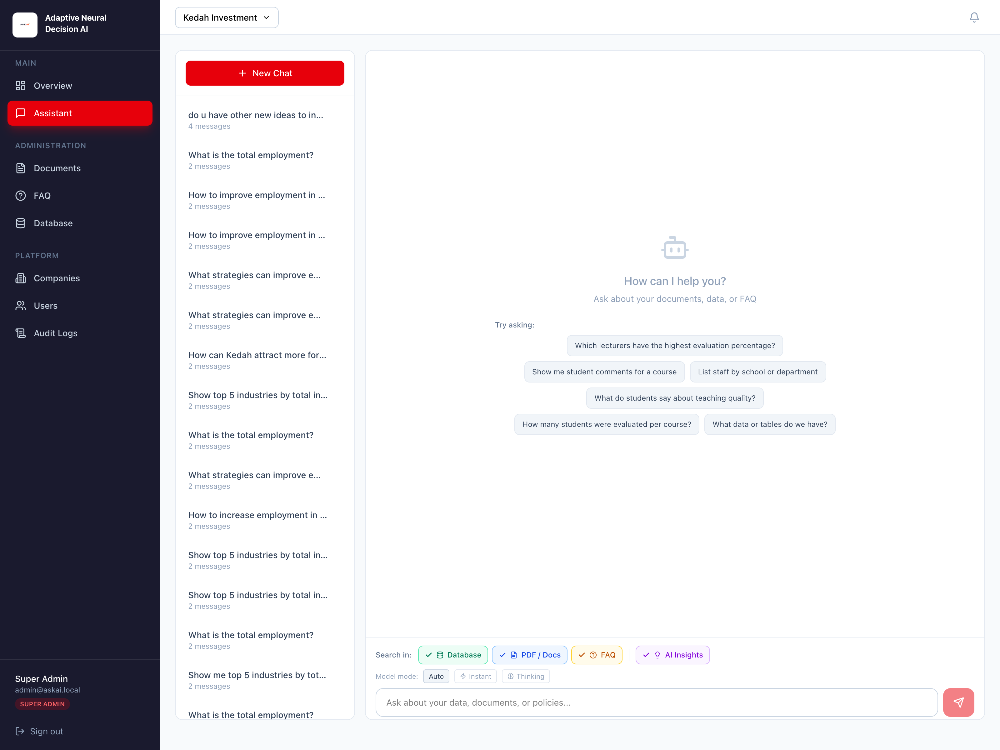
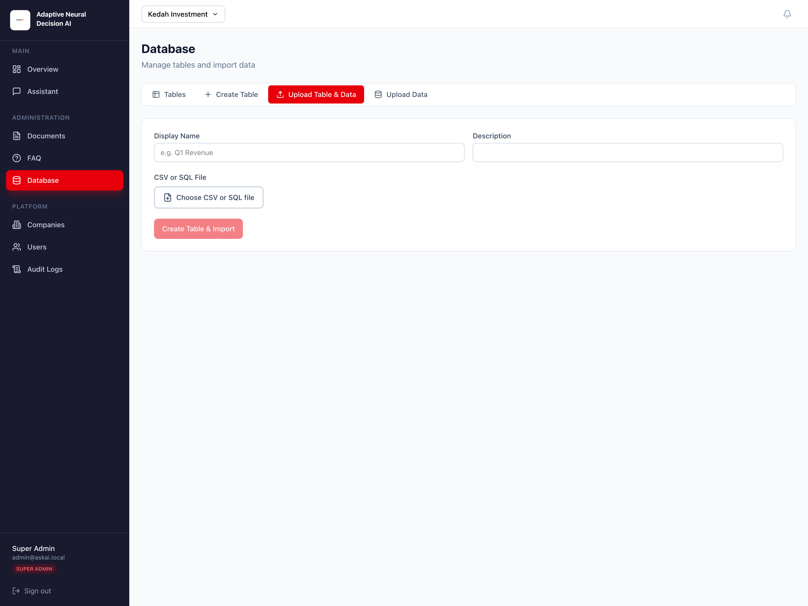
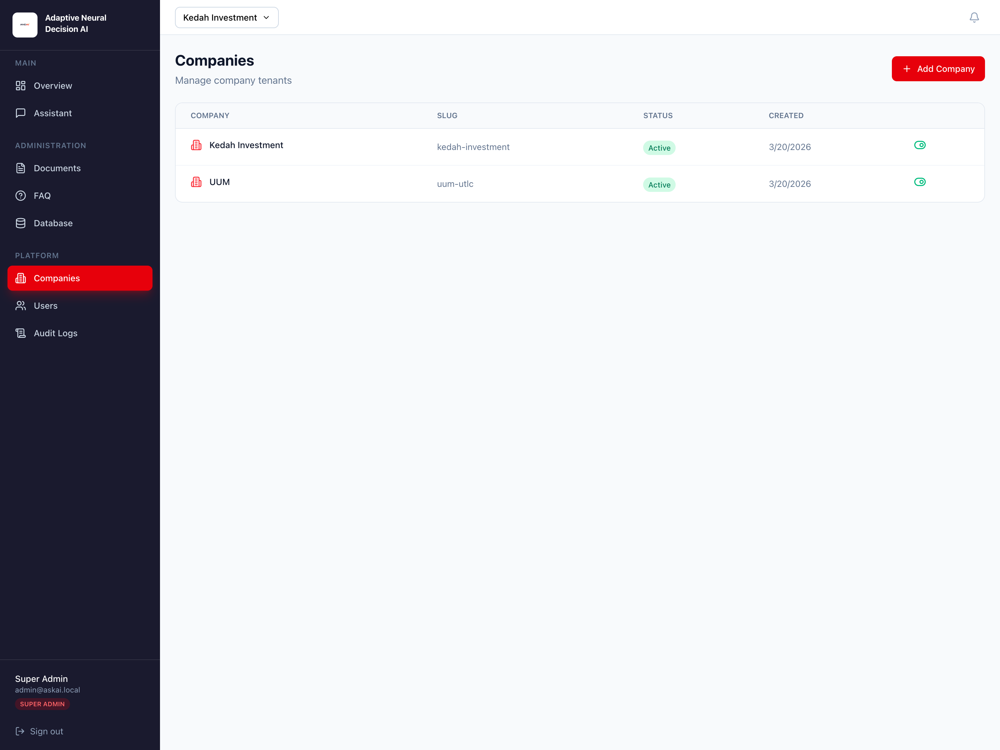
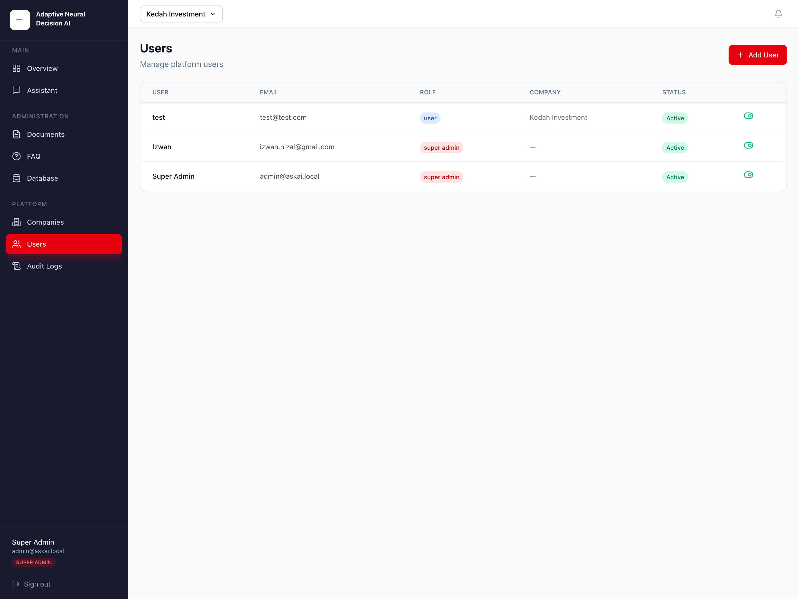
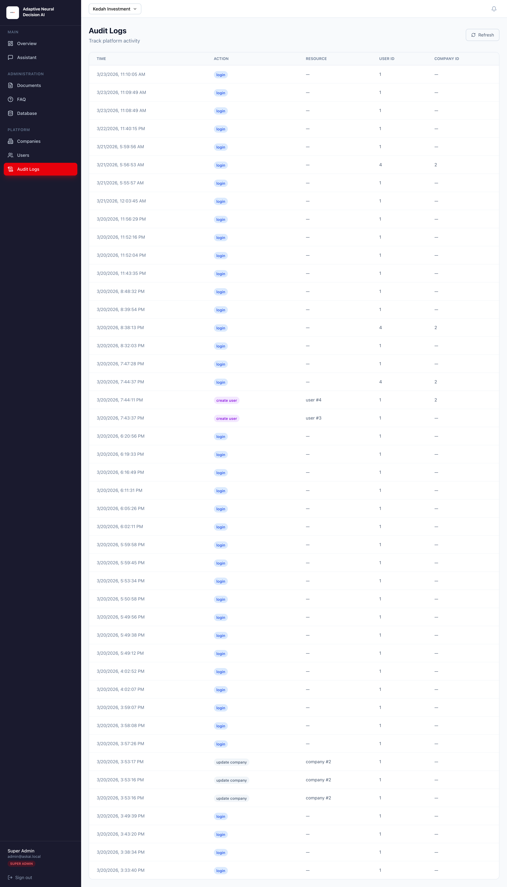

Platform: Web knowledge assistant powered by FastAPI, PostgreSQL, and Ollama
Prepared on: March 22, 2026
Prepared for: AskAI / ANDAI deployment and administration team
Contents
Introduction
Basic Information
Getting Started
Dashboard Overview
Using the Assistant
Managing Documents
Managing FAQ
Managing Database Tables and Data
Platform Administration
Account Management
Troubleshooting
Table of Figures
Login page
Dashboard overview
Assistant page
Documents page
FAQ page
Database tables page
Database upload table and data page
Companies page
Users page
Audit logs page
1. Introduction
Welcome to AskAI / ANDAI. This platform lets organizations ask natural-language questions and receive
grounded answers from three main sources: curated FAQ entries, uploaded PDF documents, and structured
database tables. The system is designed for internal knowledge use cases such as policy guidance,
operating procedures, reporting instructions, and data lookup.
This manual follows the style of a practical product user guide. It explains how to sign in, navigate
the dashboard, use the assistant, manage knowledge content, and administer companies and users.
1.1 Key Features
Hybrid question answering across FAQ, PDF documents, and structured data.
Multi-tenant company separation so each company sees only its own data.
Local LLM deployment using Ollama, so the system can run on your own infrastructure.
PDF upload, parsing, chunking, and semantic retrieval.
CSV and SQL import for structured data analysis.
Role-based access for standard users, admins, and super admins.
Audit logging for important platform activity.
System status visibility for backend API, Ollama, database, and Redis.
2. Basic Information
2.1 System Requirements
To use the AskAI web platform, you need:
A modern web browser such as Google Chrome, Microsoft Edge, Mozilla Firefox, or Safari.
A stable network connection to the deployed application.
Valid user credentials provided by your platform administrator.
For administrators: PDF, CSV, or SQL files to upload when managing knowledge sources.
2.2 Accessing the System
Open your browser and navigate to the deployment URL assigned to your organization. Depending on the
environment, this may be:
A production domain such as https://andai.my
A customer-specific or white-label domain
A local development URL such as http://localhost:3000
After the page loads, you will see the sign-in screen with fields for email and password.
2.3 User Roles
Role
Main Access
Typical Use
Standard User
Overview, Assistant
Ask questions and review answers for the assigned company.
Admin
Standard User access plus Documents, FAQ, Database
Maintain company knowledge sources and structured data.
Super Admin
All modules including Companies, Users, Audit Logs
Manage platform-wide tenants, users, and oversight.
Note: In local development, the default bootstrap account is
admin@askai.local with password admin123. In production, users should sign in
with credentials provided by an administrator.
3. Getting Started
3.1 Signing In
Open the AskAI web URL in your browser.
Enter your email address.
Enter your password.
Click Sign in.
If authentication succeeds, you will be redirected to the dashboard.
If the system rejects your credentials, it will show an error message on the login form.

Figure 1: AskAI login page.
3.2 Company Selection
Company selection depends on your role:
Standard users usually work within their assigned company automatically.
Super admins can switch between companies using the company selector in the top bar.
The selected company controls which documents, FAQ items, datasets, and assistant results are visible.
3.3 Navigation
After login, the left sidebar shows the modules available to your role.
Main: Overview, Assistant
Administration: Documents, FAQ, Database
Platform: Companies, Users, Audit Logs
The bottom of the sidebar shows your name, email, role, and a Sign out button.
4. Dashboard Overview
The Overview page is the first screen after login. It gives a quick summary of your knowledge platform
and links to the most common actions.
4.1 Dashboard Features
The dashboard includes the following sections:
Welcome Header - shows the logged-in user name and a short summary line.
Statistics Cards - shows counts for Documents, FAQ Items, Datasets, and Chat Sessions.
Quick Start - provides shortcuts to Ask a Question, Upload Document, and Import Data.
System Status - shows live health indicators for Backend API, Ollama, Database, and Redis.

Figure 2: Dashboard overview with statistics, quick start, and system status.
4.2 System Status
The status panel checks whether the main services are available:
Backend API - should be online whenever the web app is working correctly.
Ollama LLM - shows whether the local model service is connected and which models are available.
Database - shows the PostgreSQL connection status and version string.
Redis - shows whether the background queue/cache service is running.
If a service is unavailable, administrators should investigate before using features that depend on it.
5. Using the Assistant
The Assistant is the main end-user feature. It lets you ask questions in natural language and receive
responses generated from company knowledge sources.
5.1 Assistant Interface
The Assistant page has two main areas:
Session Sidebar - lists previous chat sessions and includes a New Chat button.
Chat Area - shows the conversation, answer content, sources, and the input box.
If there are no messages yet, the page displays suggested example questions to help you get started.

Figure 3: Assistant page with chat sessions, prompt suggestions, source filters, and model controls.
5.2 Starting a New Chat
Open the Assistant page from the sidebar.
Click New Chat in the left panel.
Type your question into the message box.
Click the send button or press Enter.
The system creates a new session automatically when you send the first message.
5.3 Choosing Search Sources
Above the message box, you can control which knowledge sources the assistant should search:
Database - structured tables and imported datasets
PDF / Docs - uploaded documents that were parsed and indexed
FAQ - curated question and answer pairs
You can enable one or more of these based on the type of question you want to ask.
5.4 AI Insights and Model Mode
The Assistant includes additional controls:
AI Insights - when enabled, the system synthesizes a cleaner answer from the retrieved evidence.
Model Mode: Auto - lets the system choose the most suitable response mode.
Model Mode: Instant - prefers faster responses.
Model Mode: Thinking - allows a deeper response strategy when supported.
For most daily use, leave the default settings on AI Insights and Auto.
Click Create Table & Import for CSV, or Import SQL Tables for SQL.
If some SQL tables have import problems, the page shows a list of table-level errors for review.

Figure 7: Database upload page for importing CSV or SQL tables with file preview.
8.4 Uploading Data to an Existing Table
Open the Upload Data tab.
Select the target table.
Choose a CSV file.
Select the import mode:
Append - adds new rows to the existing table
Replace - replaces existing table data with the imported file
Click Import Data.
8.5 Viewing Table Data
When you click View data on a table, the system opens a modal window showing:
Display name and physical table name
Visible rows and total row count
Paginated navigation
A preview grid of values for each column
9. Platform Administration
The following modules are intended mainly for super admins.
9.1 Managing Companies
Open Companies from the sidebar.
Click Add Company.
Enter the company name and optional description.
Click Create.
The Companies page also shows the generated slug, creation date, and active/inactive state.
Use the toggle control in the last column to activate or deactivate a company.

Figure 8: Companies page for managing tenant records and activation status.
9.2 Managing Users
Open Users.
Click Add User.
Fill in Full Name, Email, Password, Role, and Company.
Click Create User.
The Users table shows each user’s role, company, and activation status. Use the toggle control to enable
or disable a user account.

Figure 9: Users page showing role, company assignment, and account status.
9.3 Viewing Audit Logs
The Audit Logs page records key events such as logins, company creation, user creation, document upload,
FAQ creation, and dataset import.
The table includes:
Timestamp
Action
Resource type and resource ID
User ID
Company ID
Click Refresh to reload the latest activity.

Figure 10: Audit Logs page showing recorded platform activity.
10. Account Management
10.1 Signing Out
To sign out, click Sign out at the bottom of the sidebar. This clears your saved login token
from the browser and returns you to the login page.
10.2 Session Expiry and Re-Login
If your session token becomes invalid or expires, the system automatically clears the stored token and
redirects you to the login page. Simply sign in again to continue.
11. Troubleshooting
11.1 Cannot Sign In
Check that your email and password are correct.
Make sure your account is active.
For local development, confirm that the default or assigned credentials are being used correctly.
11.2 No Company Selected
If you are a super admin, choose a company from the selector in the top bar.
If you are a standard user and still see no company data, check that your user account is assigned to a company.
11.3 Ollama Not Connected
Check the System Status panel on the Overview page.
If Ollama shows Not connected, verify that the Ollama service is running.
For local environments, administrators may need to start it with ollama serve.
11.4 A PDF Stays in Pending or Error
Use the retry action on the document row.
Check whether the uploaded file is a valid PDF.
Confirm Ollama is running, because embeddings are required for document search.
11.5 Chat Answers Are Weak or Missing
Make sure the correct company is selected.
Check that the right search sources are enabled.
Confirm FAQ items are published and documents are in Ready state.
For data questions, verify that the relevant tables were imported successfully.
11.6 Database Import Errors
Review the CSV or SQL preview before importing.
Check the error list shown after an SQL import if some tables fail.
Make sure your file columns and data types are consistent.
Recommended first-use workflow: create or select a company, upload at least one PDF,
add a few FAQ entries, import a sample dataset if needed, then open the Assistant and ask a grounded
test question.
End of manual. This document was created for the AskAI / ANDAI web application in the local_llm project.